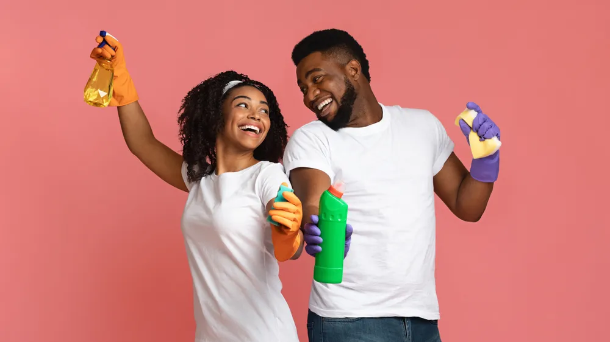

How Spring Cleaning Can Benefit Your Health

- Cleaning your home isn’t only satisfying, but it turns out it may greatly benefit your health too.
- A clean home may help decrease stress, improve mood and sleep, and help prevent illness.
- Spring cleaning can be a daunting task but making a checklist and tackling one room at a time can set you up for success.
While many of us clean our homes weekly (or daily), a yearly deep clean can help reach those often-neglected nooks and crannies. Cleaning your home isn’t only satisfying, but it turns out it may greatly benefit your health too! Be honest with yourself, when was the last time you pushed the couch away from the wall and vacuumed underneath? Or How about wiping your kitchen cupboards and pantry of dust and crumbs? If you can’t recall, a deep clean is already past due.
Decluttering May Decrease Stress
Everyone deals with stress from time to time but chronic stress can negatively impact your health. While some sources of stress aren’t within your control, a messy home is within your control. It turns out a cluttered home may be contributing to your daily stress more than you think.
Not only can an organized and clean environment help you de-stress, but doing the actual cleaning can decrease stress too. Reader’s Digest says housework may decrease stress and anxiety by 20-percent. The source also notes you may gain even more de-stressing benefits if you use lemon-scented products. The source says, “studies show this happy smell reduces stress and leaves a positive impression on others.”
Improve Air Quality
Do you suffer from asthma or allergies? An unclean home could be making your symptoms worse. Pet dander, dust, mold, and other common allergens can build up during the winter months which makes spring cleaning even more important.
To improve your air quality, be sure to change your air filters every 3-months. Reduce pet dander by vacuuming often and washing your upholstery, blankets, and pillows. Don’t forget to wash your pet’s bedding and toys too.
It’s also important to be on the lookout for mold which is often found in the basement, bathroom, and kitchen, says MedicineNet . One of the best ways to prevent mold is to reduce moisture by keeping “your home’s humidity below 60 percent,” explains the source. Finally, even though you may be tempted to open your windows and let that fresh spring air in, the source advises against it as pollen can travel through open windows.
May Improve Your Immune System
Your immune system has a very important job of protecting you from “foreign invaders (bacteria, viruses, parasites, and fungi) that cause infection, illness and disease,” explains the Cleveland Clinic . So it’s no question that you want to take care of it. One way you can support your immune system is by spring cleaning.
Healthline says dust, mold, mildew, and pet danger can all be immune system triggers, especially for individuals with allergies. “When your house isn’t clean, it can gather pollutants,” Dr. Adrian Cotton, chief of medical operations at Loma Linda University Health in California, tells Healthline.
To clean your home for your immune health, be sure to vacuum thoroughly including behind and under bulky furniture, clean the walls, window sills, light fixtures, and floor baseboards. Essentially, anywhere these pollutants can accumulate, you’ll want to clean.
May Prevent Illness
Since cleaning your home can support your immune system, it makes sense that it can also help prevent illness. Healthline explains, by cleaning high-traffic areas such as doorknobs, light switches, toilets, and other areas where many people touch, you can minimize the spread of harmful bacteria and viruses.
Cleaning is also important for preventing foodborne illness. In the kitchen, be sure to deep clean sinks, cutting boards, cupboards, counters, and the pantry. You should also do a deep clean of the fridge and freezer and be sure to throw away any expired food.
May Improve Productivity
Spring cleaning your office space whether that’s at home or in your company building may benefit your productivity. Harvard Business Review says, a cluttered office can not only cost you precious minutes every time you have to go searching for a lost paper but it can also impact your ability to focus too.
The source also says scientists at the Princeton University Neuroscience Institute have used “fMRI [functional magnetic resonance imaging] and other approaches to show that our brains like order, and that constant visual reminders of disorganization drain our cognitive resources and reduce our ability to focus.” While you’re organizing the papers on your desk don’t forget to spring clean the files on your computer too!
May Improve Mood
Just like how clutter can affect your productivity, it can also impact your mood. Reader’s Digest notes a study by the Personality and Social Psychology Bulletin that states women who describe the environment of their home as stressful and cluttered, were more likely to have depressed moods throughout the day.
But women aren’t the only ones impacted by clutter. The study says, “the physical characteristics of living and workspaces, including features like crowding, clutter, noise, and artificial light, have been shown to affect mood and health in populations ranging from young children to senior citizens.” So if you’ve been feeling down in the gutters lately, give your house a deep clean and reorganize to see if that improves your mood.
An Easy Way to Get Active
According to the CDC , 60-percent of American adults don’t engage in the recommended amount of activity ( 150 to 300-minutes of moderate-intensity exercise). And even worse, the CDC says 25-percent of American adults are not active at all.
First of all, cleaning your home is an easy way to get active. Many chores like vacuuming, mopping, and scrubbing surfaces can burn up to 4-calories per minute, says Very Well Fit . Furthermore, Reader’s Digest explains that research suggests individuals who are motivated to keep their homes clean, may also be motivated to hit their physical fitness goals too.
May Improve Heart Health
Since cleaning your home can get your body moving and your heart pumping, it may also benefit your heart health. This is because regular moderate and vigorous physical activity will strengthen your heart muscle which improves its ability to pump blood to your lungs and body. “As a result, more blood flows to your muscles, and oxygen levels in your blood rise,” explains The National Heart, Lung, and Blood Institute .
HuffPost also cites a study published in Time, the Indiana University Department of Physical Activity which found a correlation between clean homes and healthy individuals. Researchers tracked 998 African Americans between the ages of 49 and 65 (a demographic with a high risk for heart disease). The study found the individuals with “the cleanest homes were also the healthiest and most active.”
May Improve Sleep
Sleep is so important for your health. Not only does it help you feel energized the next day, but it also improves brain function and mood, plays a role in weight management, and helps reduce your risk of disease. It turns out a clean bedroom may help improve your sleep too.
For starters, we already know that cleaning can improve air quality, but the air that is free of dust particles and allergens is so important for getting a good night’s rest. Furthermore, the Sleep Foundation says making your bed daily, and washing your sheets regularly (at least once every 2-weeks, or weekly if you share a bed with a pet or sweat excessively) can help improve your quality of sleep. Finally, a clean room can help calm the mind which may help you fall asleep faster.
May Encourage Healthy Eating
Another benefit of spring cleaning is that a clean home may help encourage healthy food choices, says Healthline. The source also notes that spring cleaning may also “motivate us to reset or try out a healthier lifestyle.”
By cleaning and decluttering your home, and getting rid of the things that no longer serve you, you may feel inspired to do the same with other unhealthy habits. To help encourage healthy eating , purge your pantry and fridge and get rid of unhealthy foods. Store healthy foods within sight and make cooking more appealing by “sharpening knives, tidying your spice rack, and organizing pots, pans, and utensils,” suggests Healthline.
May Prevent Injuries
Cleaning your home may also help prevent injuries. Did you know one in four older adults suffer a fall each year in the United States? Falls also account for 3 million emergency room visits each year, says the CDC .
One of the top ways to prevent falls is to make adjustments in your home or your parent’s home. Start by cleaning up clutter off the floor, especially in high-traffic areas like the hallway, staircase, and pathways. Get rid of other tripping hazards by securing area rugs and cords.
Tips to Get Started
The thought of spring cleaning your entire home can be daunting — that’s a lot of surface area to cover! But the secret is to tackle the job one step at a time. Instead of committing to cleaning your entire home in one day, start with one or two rooms per weekend.
It’s also a good idea to make a checklist of what you want to accomplish. This will help ensure you clean every area in your home and prevent cleaning the same area twice. Not to mention, seeing a completed checklist can be incredibly rewarding! In the end, you’ll get to reap all the wondering health benefits of spring cleaning your home. Happy cleaning!
Source: https://activebeat.com/your-health/how-spring-cleaning-can-benefit-your-health/